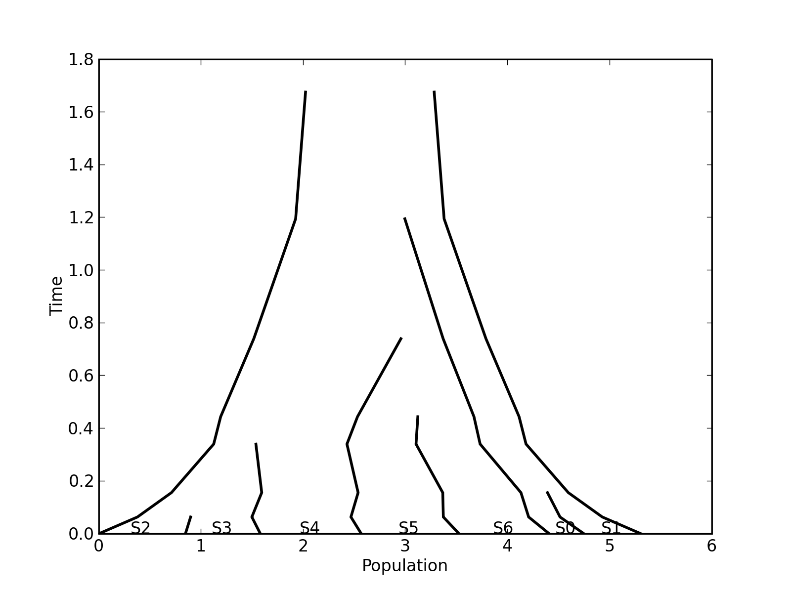
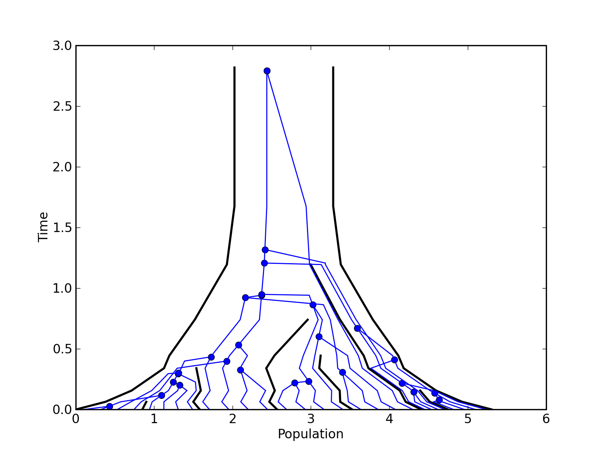
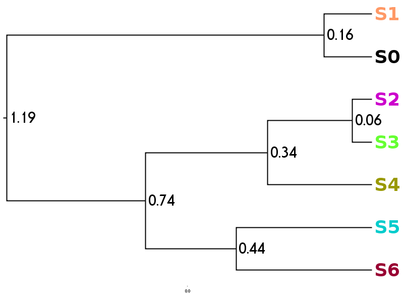
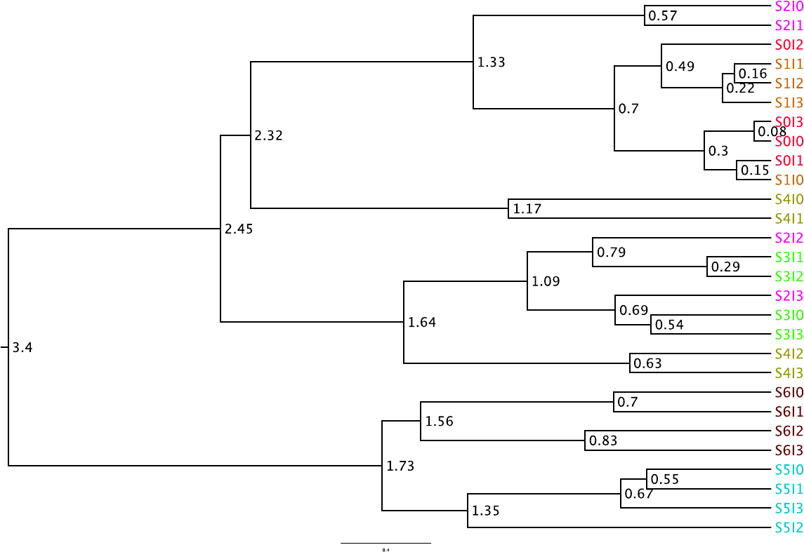
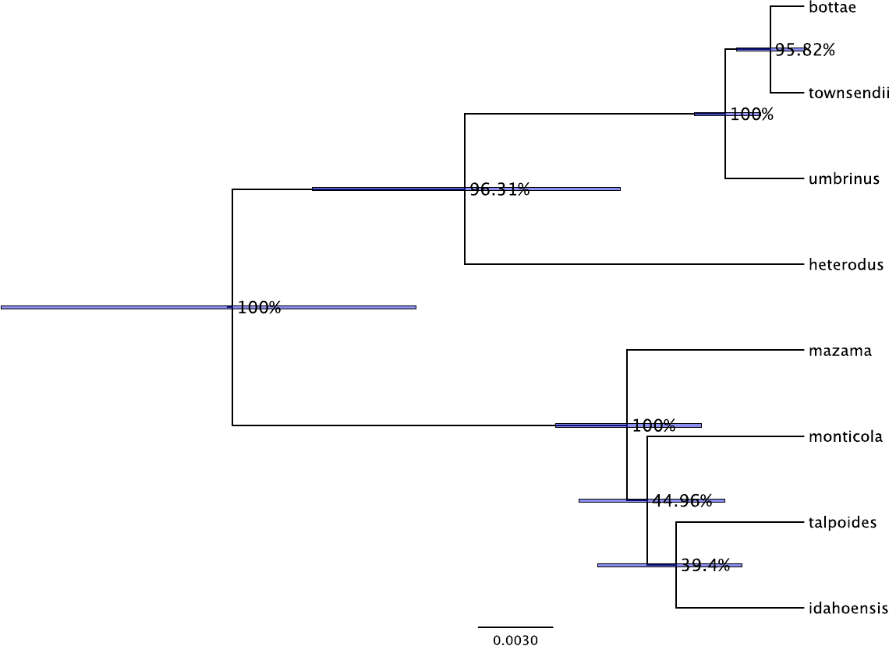
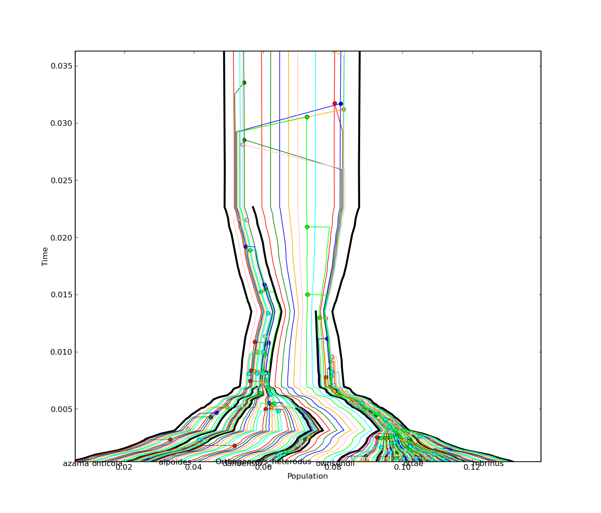

There has been increased interest in analyses of closely related species, where the effect of population genetic processes, such as the coalescent can't be ignored.
Enter the multi-species coalescent.
All these patterns are the consequence of "lineage drift" within a single population
From Edwards and Beerli, 2000, Evolution 54: 1839-1854
Define \(N_i\) to be the effective population size at the present for the species \(i \in \{1,2,\dots,n\}\), and \(A_i\) the ancestral effective population of species \(i\) at the time of the species origin.
Then for all ancestral species \(j \in \{ n+1, n+2, \dots, 2n\}\) (represented by internal branches in the species tree) define \(N_j = A_{\text{left}(j)} + A_{\text{right}(j)}\), where \(\text{left}(i)\) is the left descendent of species \(i\) and \(\text{right}(i)\) is the right descendent species.
\[A_k \sim \text{Exp}(\Theta), \quad 1 \leq k \leq 2n\] \[N_i \sim \text{Gamma}(2, \Theta), \quad 1 \leq i \leq n\] \[N_j = A_{\text{left}(j)} + A_{\text{right}(j)}, \quad n < j < 2n\]For a species tree of \(n\) species, define \(T_i\) to be the time at which the species tree goes from having \(i\) to \(i-1\) species, back in time. Additionally define \(\tau_i = T_i - T_{i+1}, i \in \{2,\dots,n-1\}\) and \(\tau_n = T_n\).
The Yule speciation prior supposes a uniform rate species birth (\(\lambda\)) on all lineages, implying a prior of:
\[\tau_i \sim \text{Exp}(1/i\lambda)\]More complex species tree priors that admit species extinction (Birth-death prior; Gernhard, 2008) and incomplete sampling (Birth-death-sampling; Stadler, 2009) are also possible.
All of these species tree priors imply a uniform prior on labelled histories.
Consider a single species in the species tree, spanned by \(k = u-v\) coalescent intervals (and a final interval without a coalescent event). \(t_k\) is the time during which there are \(k\) lineages. Define \(N(s)\) as the population size of this species at time \(s\). Define \(s_i = \sum_{k=u}^it_k\). The prior density for each interval ending in a coalescent is:
\[f(t_k) = {\frac{1}{N(s_k)}}{\exp\left(-{\int \limits_{s_{k-1}}^{s_k} \frac{\binom{n}{2}}{N(x)} dx }\right)}\]The coalescent prior density for the final interval that does not end in a coalescent event is:
\[f(t_v) = {\exp\left(-{\int \limits_{s_{v-1}}^{s_v} \frac{\binom{n}{2}}{N(x)} dx }\right)}\]Define \(f_g(g | S)\) to be the total coalescent density for gene tree \(g\), obtained from the product of all the intervals over all species in the species tree \((S)\).
If we additionally define \(\color{orange}{\Pr(D_g | g)}\) as the phylogenetic likelihood of the sequence data for gene tree \(g\), and \(\color{red}{P(S | \lambda, \Theta)}\) as the prior on the species tree times and population sizes, then the posterior distribution over gene trees, species tree and other parameters is:
$${\color{#007f7f}{P(\mathbf{G},S,\lambda,\Theta | \mathbf{D})}} = \frac{1}{\color{green}Z} \color{orange}{\left[ \prod_{g \in \mathbf{G}} \Pr(D_g|g) \right]} \color{red}{\left[\prod_{g\in\mathbf{G}} P(g|S)\right] P(S | \lambda, \Theta) P(\lambda) P(\Theta)}$$where \(\mathbf{G}\) is all the gene trees, \(\mathbf{D}\) is all the gene alignments, \(\color{red}{P(\lambda)}\) is the prior for the speciation rate, \(\color{red}{P(\Theta)}\) is the prior on the ancestral population size parameters, and \(\color{green}Z = P(\mathbf{D})\) is the unknown normalising constant.
Species tree
Species tree and one gene tree
Species tree
"Gene" tree from concatenated genes
Data from (Belfiore, 2008)
27 individuals, 7 loci (12 from T. bottae, 23 from others, 1 from outgroup)
Data from (Belfiore, 2008), software implemented in BEAST by Heled and Drummond (2010)
